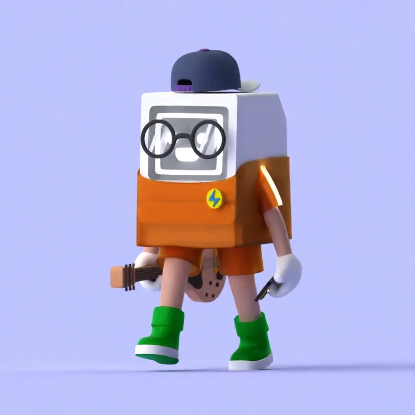
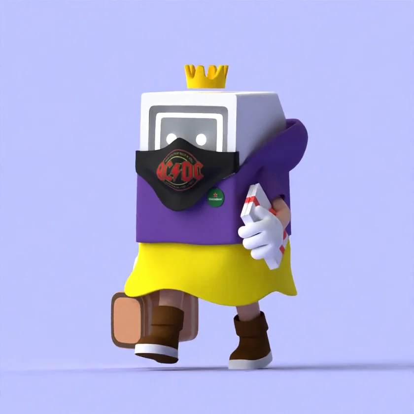

Brover Studio.
Bir dijital deneyimin yalnızca ekran düzeni değil, baştan sona tutarlı bir yaratıcı dünya olması.
 PROJE İNCELEMESİ / Web & Kreatif Yön
PROJE İNCELEMESİ / Web & Kreatif Yön01 / TASARIM SORUSU
Neyi çözmeye çalıştık?
Görsel kimliği, tipografiyi ve etkileşimi birlikte ele alan kendine özgü bir dijital atmosfer kurmak.
02 / YARATICI YÖN
Görsel yaklaşım.
Büyük ölçekli görseller, güçlü hiyerarşi ve editoryal boşluklarla kullanıcıyı yönlendiren bir arayüz dili.
03 / UYGULAMA
Fikirden sahneye.
Ana sahne, proje görsel sistemi ve sayfa ritmi birlikte düşünülerek farklı ekran boyutlarına uyarlanabilecek bir sunum dili geliştirildi.
04 / GÖRSEL ARŞİV01 / Brover Studio 02 / Brover Studio
02 / Brover Studio
İşin içinden kareler.
01 / Brover Studio02 / Brover Studio
03 / Brover Studio
04 / Brover Studio05 / İLGİLİ DİSİPLİNLER
Bu işte hangi beceriler öne çıkıyor?
Diğer çalışmalar.
Bu inceleme mevcut görsel arşiv üzerinden hazırlanmıştır. Ölçülmemiş performans sonuçları veya müşteri beyanları içermez.